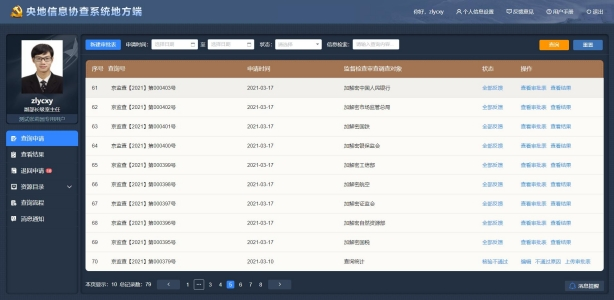

- {{item.name}} {{item.page}}
1 系统功能角色清单
表1.1 系统角色功能清单
2 系统流程
本系统以支持各省纪委监委的查询员从提出查询申请到查看反馈结果为目标而建立，包括审批表的填写、审批、盖章、审核、核验、查询、反馈结果等环节。具体流程如下：
1.央地信息协查地方端查询员在系统中填写审批表；
2.将审批表提交至具有审批权限的领导处进行审批，系统依据地方权限进行配置，支持线上审批或者线下审批；
3.领导审批通过后，查询员将审批表提交至公章管理员处审核；
4.公章管理员进行形式审核并加盖公章；
5.盖章通过后，将加盖公章的审批表提交至审核员处进行形式审核；
6.审核员形式审核通过后，将审批表提交至央地信息协查中央端，系统对审批表进行自动核验；
7.系统自动核验通过后，由系统管理员负责将审批表手动摆渡至查询系统进行查询；
8.各协查单位接收到查询请求后，将查询结果经过查询系统反馈至信息协查系统中；
9.查询员登录系统查看审批表的反馈结果。

图2.1 系统流程图
3 登录系统
用户第一次登录系统时，用户名和密码为系统管理员默认分配的初始化用户名和密码。
初次进入系统后，为了系统数据安全，需要马上修改密码。
建议使用奇安信浏览器或IE10、11及以上版本浏览器。
扫描仪上传审批表前需下载扫描仪插件，扫描仪插件下载地址位于系统页面右上方。
根据规定，查询员使用系统必须上传有效工作证件，待审核员审核通过后方可使用系统。其他用户无需上传工作证件。
图3.1 登录界面
4 查询申请
4.1 历史审批表
为保证查询安全、流程规范，对信息查询工作进行分级审批。查询员根据被查询对象的职级、干部管理权限等要素，填写查询申请审批表。系统将自动生成审批表和对应的二维码和条形码。审批表由相应领导审批后，查询员将审批表提交给公章管理员加盖公章，随后再将审批表发送给审核员进行形式审核，无误后提交给信息协查系统中央端，进行系统自动核验。
在查询申请页面，查询员可以看到自己申请过的所有审批表信息，包括草稿、待盖章、待审核等相关状态的审批表。
通过“信息检索”可以关键字检索查询号和主要查询对象中的信息；同时可以通过申请时间来筛选在一定时间范围内申请过的审批表。
图4.1 历史审批表
4.1.1 列表
列表展示查询号、监督检查审查调查对象、申请时间、状态、操作。
4.1.2 状态
查询员可以在此处查看跟踪当前审批表所处的流程节点，以及历史已经过的流程节点。依据查询流程的线上审批方式与线下审批方式的不同，审批表的状态分别是：线上审批为草稿、待审批、审批通过、审批不通过、待盖章、不予盖章、待审核、审核通过、审核不通过、核验通过、核验不通过、部分反馈、全部反馈；线下审批为草稿、待打印、待提交、待盖章、不予盖章、待审核、审核通过、审核不通过、核验通过、核验不通过、部分反馈、全部反馈。
4.1.3 操作
该操作列依据线上审批与线下审批方式的不同分别进行配置。
1．编辑
查询员可以对于当前有问题或者需要修改的审批表进行修改编辑，点击“编辑”进入审批表编辑页面进行修改。
2．查看审批表
当查询员需要打印审批表或查看审批表时，点击“查看审批表”可以直接进入审批表查看页面。
3．删除
仅状态为“草稿”的审批表可以删除。
4．生成审批表
对于审批表需要进行线下审批的情形，查询员可以点击操作“生成审批表”进行打印。
5．上传审批表
对于领导线下审批签字的审批表，查询员需要将该已签字的审批表扫描上传至系统，进行下一步盖章核验。
6．提交审批
线上审批情形中，查询员填写审批表后，可以直接提交线上审批。线上审批完成后，该审批表直接进入待盖章状态。
7．提交盖章
线下审批情形中，领导对审批表进行签字审批后，查询员需要将具有领导签字的审批表上传至系统，并提交盖章。
8．不通过原因
针对状态为审批不通过、审核不通过、核验不通过的审批表，查询员可以查看审批不通过的原因、审核不通过的原因、核验不通过的原因。
9．审批记录
针对线上审批的情形，相关领导审批完成后，查询员即可以查看审批记录。
10．查看结果
当审批表申请的状态为全部反馈或部分反馈时，查询员可以查看反馈结果。
4.2 新建审批表
查询员点击“新建审批表”进入审批表填写页面，在该页面，查询员可以填写被查询对象信息，并生成审批表。
图4.2 审批表信息填写
4.3 审批表信息
4.3.1 信息自动获取
“申请单位”、“申请部室”、“承办人”、“查询人联系电话”信息将从组织机构用户信息中自动获取，无需录入。
4.3.2 被查询对象基本信息
1. 监督检查审查调查对象
该对象为本审批表的主要被查询对象， “工作单位”、“职务”、“职级”、“干部管理权限”均为该对象的信息。
2．查询申请人和协助申请人、承办人
承办人为当前登录人，当查询申请人不可以使用系统时，可以委托承办人来申请查询被调查人信息；查询申请人和协助申请人不能选择同一个人。
3．审批单相关信息
“事由”为申请该审批单的事由、“关联案件（线索）号”为该审批单所关联的案件或线索号。
4．敏感信息
是否“敏感信息”是指该审批表的所有调查信息中是否包含敏感信息。若选择是敏感信息，则只有有权限的人员登录时才可以看到该审批表的具体调查内容。
4.4 被查询对象信息
一张审批单中被查询对象最多可以填写50个查询对象，支持线上填写和通过模板导入被查询对象信息。
4.4.1 自然人
1. 姓名
姓名有字数限制，最多不超过50个字。
2. 证件类型
当前证件类型包括居民身份证、往来台湾通行证、往来港澳通行证、中国公民护照。
3. 证件号码
被查询对象的证件号码，系统将对填写的号码做校验。
4. 职级
被查询对象的职级。职级不同，审批表审批的领导层级不同。
5．查询项
目前系统已接入81家商业银行、中国人民银行、电信运营商（移动、联通、电信、虚拟运营商）、银保监会、中国证监会、国家税务总局、国铁集团、中航信、自然资源部、市场监管总局等行业数据，以及各行业可查询的查询项。查询员根据实际调查需要，勾选相应的查询项进行查询。
4.4.2 机构
1．企业名称
必填项。
2．证照类型
目目前有组织机构代码、统一社会信用代码和纳税人识别号三类。
3．证照代码
必填项。
4．查询项
参照自然人查询项。
4.4.3 其他类
目前其他类包括银行账/卡号、手机号、信托产品编码、理财产品编码、保险单号、商户代码（银联）、商户订单号（银联）、签购单信息（银联），查询员根据实际调查需要选择不同的类型与相应的查询项进行查询。
5 查看反馈结果
5.1 查看结果
查询员可以在查看结果功能模块查看查询反馈结果。点击被查询对象导航树的某一类信息，可以在右侧查看该类型数据的信息列表以及反馈结果详情。其中部分信息项因数据量过大，不适宜在系统中查看，仅支持下载查看，如银行业金融机构交易流水、中国人民银行征信信息等。
图5.1 查看结果
5.2 导出结果
查询员可以将查询结果以压缩包文件格式导出至本地进行查看，点击“导出全部”导出该审批单的全部查询结果数据。为保证数据安全，在导出时，系统强制要求对导出文件进行加密。当有新的结果反馈时，可以点击“导出新结果”将新反馈的结果导出，同时进行加密。
6 退回申请
为方便查询员集中处理被退回的审批表，系统设置退回申请模块。本模块列表包括审批员审批不通过、公章管理员不予盖章、审核员审核不通过和系统核验不通过的审批表，查询员针对被退回的审批表可以重新编辑或上传审批表，支持查看不通过原因。
图6.1 退回申请
7 查询申请审批
为满足各省纪委监委不同的查询场景，系统支持线下审批与线上审批两种方式。以各省级纪委监委机关为单位，针对线上审批方式或线下审批方式进行配置，并就线上审批的权限、流程支持自定义配置。
7.1 线上审批流程
查询员在填写完审批表后，根据系统配置进行线上审批（或者线下审批）工作模式；属于线上审批模式的，需要将已经填写好的审批表线上提交给对应的领导干部进行批示。本级领导审批通过后将审批表再反馈给查询员，由查询员自行决定下一审批环节由哪位领导审批，或结束审批；直至审批结束后，查询员可以进入整个查询流程的下一环节，进行提交盖章。
7.1.1 提交审批
查询员填写完审批表后，提交审批时选择线上审批；点击“提交审批表”按钮，进行线上审批，弹出“审批流转”窗口，在审批流转窗口可以查看审批记录和选择流转程序，选择“下一环节审批人”，可以选择下一步要进行审批的领导；可以被选择的领导都是在后台被赋予了审批员角色的人。
图7.1 提交审批
7.1.2 领导审批
具有审批员角色的领导干部，在接收到查询员提交审批的审批表之后，在待审批列表中可以对该审批表进行审批；如果审批表无误，点击“审批”并签字；如果审批表不合格，填写不通过原因并退回给查询员。
图7.2 线上审批
7.1.3 结束审批
领导审批结束后，查询员可以在提交线上审批操作页面点击“结束审批”，该审批表将自动进入盖章环节。
7.2 线下审批流程
查询员在系统中填写审批表后，生成并打印审批表，通过线下工作流程，找到相关领导签字审批。审批完成后，将具有领导签字的审批表以扫描或拍照的形式上传至系统，并提交系统盖章。
7.2.1 生成审批表
查询员填写完所有被查询对象的信息后，点击“保存”，系统将所填写的信息全部保存，查询员下次进入系统后可以再次编辑审批表；
点击“生成审批表”，系统自动生成审批表，同时自动生成条形码、二维码。
7.2.2 打印审批表
查询员可以在页面预览审批表，检查填写的信息是否有误，如果有问题，可以重新编辑审批表；如果没有问题，则可以点击“打印”按钮打印审批表。
打印时，为了保证查询系统可以自动将统一查询号下的审批表进行归目，会自动生成条形码保证页码不错乱。为了满足各个业务部门的需要，将第一页竖向打印，其他页横向打印。
第一页为审批员签字页，第二页及以后为监督检查审查调查对象信息和被查询对象信息，二维码将在最后一页生成。

图7.3 生成、打印审批表
7.2.3 上传文件
查询员将具有领导签字的纸质审批表以扫描或拍照的形式，将png文件上传至系统中。提交时系统会自动对纸质审批表的真实性和一致性做校验。上传成功后，查询员点击“提交盖章”，将该审批表提交至公章管理员处进行盖章。
扫描形式上传纸质审批表，需将纸质审批表放在扫描仪器上，点击扫描，待扫描成功即可。
拍照形式上传审批表，需用手机或相机等拍照设备将纸质审批表拍照存储在设备中，再将该文件上传至系统中，待上传成功即可。
图7.4 上传文件、提交盖章
8 查询申请盖章
公章管理员对查询员提交需要加盖公章的审批表进行核验。根据规定，公章管理员仅能查看审批表的领导签字页，不能查看被查询对象的调查信息。
公章管理员将审批表上传件和系统自动生成的审批表进行比对核验。无误后加盖单位公章，并将审批表提交至审核员处。
图8.1 盖章
9 印模管理
公章管理员负责上传本省的印模，上传印模时，系统仅支持PNG格式，且只能上传一个。
公章管理员可下载当前的印模，也可以查看历史上传记录。
10 审核
10.1 查询申请审核
审核员对已经加盖公章的审批表进行核验，审核员对审批表的一致性、真实性、合规性进行形式审核。
根据规定，如果审批表中包含敏感信息，审核员只能查看审批表的领导签字页，不能查看被查询对象的调查信息；如果不包含敏感信息，则可以查看审批表的全部内容。
审核员将审批表上传件和系统自动生成的审批表进行比对核验。无误后加盖本人签名章，并将审批表提交至信息协查系统中央端进行核验。若审批表有问题，退回给查询员，并填写不通过原因。
图10.1 审核
10.2 工作证审核
审核员要对系统用户提交的工作证进行审核。查询员可以重复上传工作证，上传后的工作证，由审核员进行审核，多次上传的工作证，以审核员最后一次审核通过的为准。审核通过后，用户可以正常使用系统。核员要对系统用户提交上来的工作证进行审核。主要对工作证号、有效期。查询员可以重复上传工作证，上传后的工作证，由审核员进行审核，多次上传的工作证，以审核员最后一次审核通过的为准，作为传给协查单位的标准有效证件。审核通过后，便可以正常使用系统了。
11 查询文号配置
审核员需按照规定对本省的查询文号进行自定义配置，可以新建查询文号，也可以对已有的查询文号进行编辑、删除，以及启动和停用。查询文号仅有一个可以生效，当存在多个文号时，设置一个生效后，其他的自动失效。
12 基础数据管理
审核员需要上传并同步本省的基础数据（印模、文书和证书）至信息协查系统中央端。其中印模由公章管理员上传，文书和证书由审核员上传。最终将以上三类数据统一汇总至审核员处，由审核员负责同步至信息协查系统中央端。
12.1 上传基础数据
审核员负责上传本单位的文书和证书。上传文书模板时，系统仅支持word格式，且只能上传一个；上传证书时，系统仅支持PFX格式，且只能上传一个。
12.2 同步基础数据
审核员负责将最新上传的文书、证书、印模同步给中央，新的基础数据有“NEW”标志。当列表中存在多个历史上传的基础数据时，同一类型基础数据仅有一个可以生效。当最新的基础数据同步给中央时，该基础数据即可生效，其他同类型的基础数据失效。以最后一次同步时间作为生效的标准。
13 查询员清单
审核员可以查看本单位的查询员信息，包括查询员姓名、所属单位、所属部门、工作证有效期、账号有效期，并可以查看工作证。
通过选择本单位申请部门，或者输入信息检索条件，可以实现查询员的筛选。
14 查询记录
14.1 查询记录列表
监督员作为央地信息协查系统的审计监督人员，可以对本单位各个部门申请的审批单申请记录进行查询。通过筛选条件，监督员可以查询指定部门一定时间范围内的申请记录，同时可以查看审批表。根据规定，如果审批表中包含敏感信息，监督员只能查看审批表的领导签字页，不能查看被查询人的调查信息；如果不包含敏感信息，则可以查看审批表的全部内容。
图14.1 查询记录
14.2 筛选审批表
通过筛选申请部门，可以查看各个部门的审批表申请记录。
通过检索查询号和信息列表中的主要内容，筛选审批表申请记录。
通过申请时间，可以筛选在一定时间段内的审批表申请记录。
15 操作行为记录
监督员可以查看本单位所有人操作系统的记录。用户是谁，在什么时间操作的系统，操作的内容是什么，在哪个IP操作了系统。
用户为系统的登录人；时间为用户操作功能的时间，精确到年月日时分秒；操作为用户具体的操作行为；IP为用户登录操作系统的IP地址。
16 查询统计
监督员可以对本单位查询申请审批表的使用情况进行相关的统计分析工作。
某省纪委监委在一段时间内，申请了多少张审批表；自然人、机构、其他每一类被查询对象分别查询了多少个；每类信息查询类型分别查了多少条。
点击“导出报表”可以将本单位在时间筛选范围内的统计报表以Excel文件格式导出到本地。
图16.1 查询统计
17 资源目录
用户可以查看系统已接入的协查单位与数据项。
协查单位内容包括单位名称、数据类型、被查询对象类型与查询数据反馈时长（参考）。
数据项左侧为信息类型的导航树，可定位到某协查单位具体的信息项，并查看该信息项下的具体字段与说明。
18 组织用户管理
系统管理员负责系统的组织用户管理、IP配置管理等相关工作。
18.1 组织机构同步
系统中的所有组织机构和用户，除专案组外，全部从应用支撑平台或专门的用户组织机构管理平台同步过来。初次使用系统时，应将组织机构和用户初始化好。
图18.1 组织用户管理
18.2 配置角色
对于同步过来的用户，需要为其配置角色，使其具有相关的功能进而可以使用系统。
选择某一部门，在该部门人员列表中点击“配置”，进入配置页面，可以看到该用户的基本信息，在配置信息中可以为其配置角色。
18.3 新建专案组
选择“纪委监察委”时，可以在此机构节点下建立专案组，专案组与其他的业务部门并列，直属于该纪委监察委。
点击“新建专案组”，添加“专案组名称”、“专案组编码”、“显示顺序”、“是否有效”，保存后成立专案组。其中“是否有效”为“是”的时候，则该专案组下的所有用户均可使用系统，当为“否”的时候，则专案组失效，该专案组下的所有用户均不可以使用系统。
图18.2 新建专案组
可以在专案组内新建用户，点击“新建用户”，进入用户信息配置页面。将页面中的信息填写完整，点击“提交”，该用户则建成。当该用户不在专案组中时，点击“删除”，可以将该用户移除专案组。
当专案组信息发生变动时，点击“编辑专案组”，可以对专案组信息进行修改矫正。
当该专案组永远不启用时，点击“删除专案组”，则永久删除该专案组，其下属的所有用户也全部不能使用系统。
18.4 同步组织机构
点击“同步组织机构”时，系统会自动将该单位的组织机构和用户信息全部从地方端同步到中央端。
图18.3 同步组织机构
19 IP配置管理
为保证审批管理系统使用安全，采用IP限制访问策略，只有配置了IP的客户端才可以访问本系统。IP由系统管理员统一配置。
19.1 新建IP分配策略
IP需要选定某一个部门后，以部门为配置对象进行IP配置。点击“新建IP分配策略”，进入配置页面。
策略名称为必填项；
IP配置最多只能添加5个IP段和10个IP，且不能重复，即本策略中的IP互相冲突，或与其他策略中的IP出现冲突时，会给出提示，不能添加；
有效期即该策略中的IP有效期，所有的IP仅能在该期间内访问系统，超期的IP则失效不能访问系统。
批准依据为该部门线下提交的申请IP依据，系统管理员以图片的形式上传到审批管理系统。
已经配置好的IP分配策略可以重新编辑，超过有效期的IP不可以访问系统。
20 意见反馈
为了更好的搜集用户的使用问题和意见，在央地信息协查系统增加用户意见反馈功能。系统使用用户可以在反馈意见模块添加对系统的使用问题和意见反馈，由中央系统管理员搜集用户的反馈意见，并根据用户意见做出对应的答复和修改。
图20.1 意见反馈
21 消息通知
信息协查系统地方端用户可以查看中央端下发的消息通知，具体包括通知的标题、发送人、发送时间与消息内容详情。用户查看消息后，该条消息状态由未读变更为已读。
图21.1 消息通知